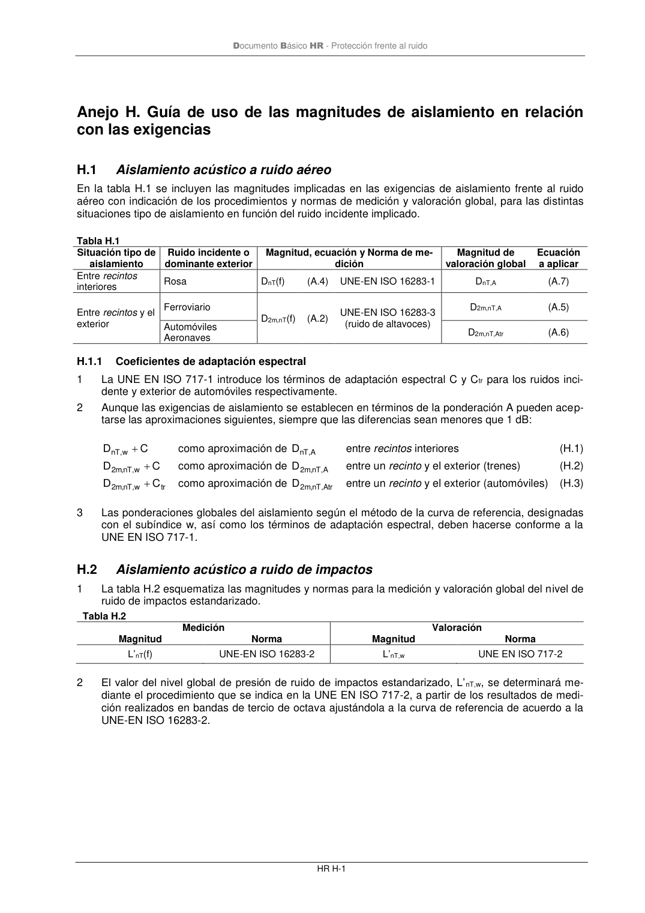

DB-HR · H.2 Aislamiento acústico a ruido de impactos · versión 2019-12-20 · capa oficial
Formatos: JSON compacto · Markdown · PDF fuente
Ámbito del documento · texto del ámbito · documento y tablas
ID técnico a0120 · PDF pág. 69-71 · jerarquía no validada por persona · contrastado con el literal de la página 69 (candidato tipográfico); no validado por persona · padre: a0118
H.2 Aislamiento acústico a ruido de impactos Aislamiento acústico a ruido de impactos 1 La tabla H.2 esquematiza las magnitudes y normas para la medición y valoración global del nivel de ruido de impactos estandarizado. Tabla H.2 Medición Valoración Magnitud Norma Magnitud Norma L’nT(f) UNE-EN ISO 16283-2 L’nT,w UNE EN ISO 717-2 2 El valor del nivel global de presión de ruido de impactos estandarizado, L’nT,w, se determinará me- diante el procedimiento que se indica en la UNE EN ISO 717-2, a partir de los resultados de medi- ción realizados en bandas de tercio de octava ajustándola a la curva de referencia de acuerdo a la UNE-EN ISO 16283-2. Documento Básico HR - Protección frente al ruido HR I-1

PDF fuente redistribuible: copia fiel enlazada en esta página (SHA256 verificado).